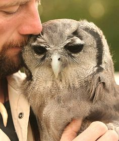

Owl's Coffee Depot
Because "WHOO" serves the best coffee? The Owl Does! ®
Our Story
When the founder made a pilgrimage to South America to discover the meaning of coffee. He came across the Aztec Brewing Style which is now used in every pot of Owl's Coffee.
After returning to the North West he made it his life goal to bring the joy of Owls coffee to the masses.
After brewing in his garage and selling to the Owls signature taste to local coffee he shops, he started Owl's coffee in 2010 and the North West has never been the same.
Why the name? Owls Coffee
Its all because of "Sam" the owl. He's been apart of the family for 15 years and is often overseeing the operation from his perch in the store.
When you come in ask for Sam's favorite brew the "WHOO Latte."
Take a picture of Sam and maybe we'll upload it to our collection.